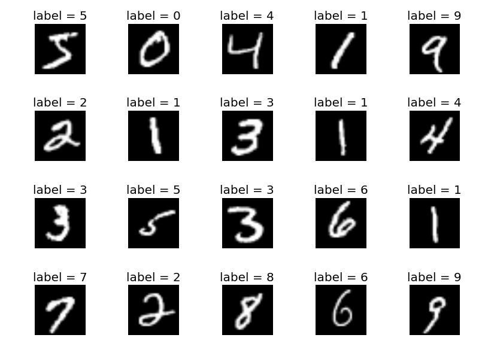

FPGA Neural Network using a Tally Numbering System
My Masters Thesis is to implement a neural network on an FPGA (Field Programmable Gate Array) and do so using a unique numbering and math system thought up by my graduate advisor Kosuke Imamura. The thesis will be using the MNIST Dataset, which is a dataset of handwritten numbers 0 through 9 used for experimenting with machine learning. The neural network architecture will either be a multi-layer perceptron or its variant a convolutional neural network which is generally used for image recognition.
MNIST Dataset

This data set includes 60,000 training images and 10,000 testing images all include labels with what the number should be. Each image in the MNIST dataset is 28 x 28 pixels using 8-bit greyscale.
Tally Numbering System
Instead of using the normal binary numbering system and floating point or fixed point math this neural network will be implemented using a Tally Numbering System. The essence of the tally numbering systems is that the number of 1s in a bit string represents the number. The purpose of this numbering system and the associated math is to decrease computation time / hardware used / energy used over conventional floating point and fixed point operations.
00011111 = 5.
The most significant bit represents the sign, 0 for positive and 1 for negative.
00011111 = 5
10001111 = -4.
Addition and Subtraction is accomplished by bit shifting left or right. Bit shifting is computationally cheap and can be implemented with just a barrel shifter. As opposed to all the logic required for basic addition and subtraction in floating and fixed point.
00001111 + 00000011 = 00111111 (4 + 2 = 6) the result is just 4 bit shifted to the left 2 spots and bitwise OR with 2.
Multiplication and Division is done by reflecting the bit string through a matrix with a slope of the number that is being multiplied or divided by. This is implemented using a look up table because implementing an efficient line drawing algorithm would require multiplier blocks where the point of the talley numbering system is to reduce or eliminate the used of multiplier blocks to increase speed and reduce hardware used.

Fractional Representation using Tally Numbering System
Fractional number representation, which I created, is done by picking a number for the total number of bits to be used such as 16, plus a signed bit. Note that choosing a large number may consume a lot of hardware and choosing a small number may reduce accuracy and cause errors. When all 16 bits are equal to 1 then that represents a 1, when all bits are 0 then that represents a 0, everything in between represents fractions such as eight 0s and eight 1s is equal to 0.5 and twelve 0s and four 1s equals 0.25.
1111111111111111 = 1
0000000000000000 = 0
0000000011111111 = 8
0000000000001111 = 0.25
Mathematical Operations are the same as before. Fitting data to this system is just rounding to the nearest fraction.
Neural Network Architecture
Currently I'm working on a multi-layer perceptron to implement on the FPGA. The perceptron will consist of 3 layers, and input layer of 784 nodes because each MNIST image is 28x28 which equals 784, the hidden layers is 100 which is arbitrary as hyper parameters in machine learning are and the output layer is 10 nodes for each of the 10 numbers.
The neural net will be a basic feed forward network at first using pre calculated weights used from a separate multi-layer perceptron that was trained on the MNIST data.